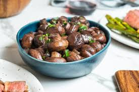

A fun"gi" sauteed mushroom recipe
I will not apologize for that

A nice quick meal that works as a great side dish or appetizer.
Now lets get this started and have some fungis.
I have regrets but that last line is not one of them.
Ingredients
- 2 tablespoons olive oil
- 3 tablespoons salted butter
- 8 cloves garlic, minced
- 1 1/2 pound whole mushrooms cleaned and stemmed(stems reserved)
- salt to taste
- 1/4 to 1/2 teaspoon red pepper flakes, depending on heat preference
- 1/4 cup vermouth
- crusty bread, for serving
Steps
-
In a large saute pan on medium heat, combine olive oil and butter until the butter begins to foam.
Add garlic, and saute until translucent. Add mushrooms caps and stems and cook, stirring only
occasionally, until the mushrooms are brown and have absorbed most of the butter. Add salt, red pepper
flakes and vermouth, using the liquid to deglaze the pan.
- Cook for about 5 minutes, then remove from heat. Serve hot with crusty bread for soaking up the sauce